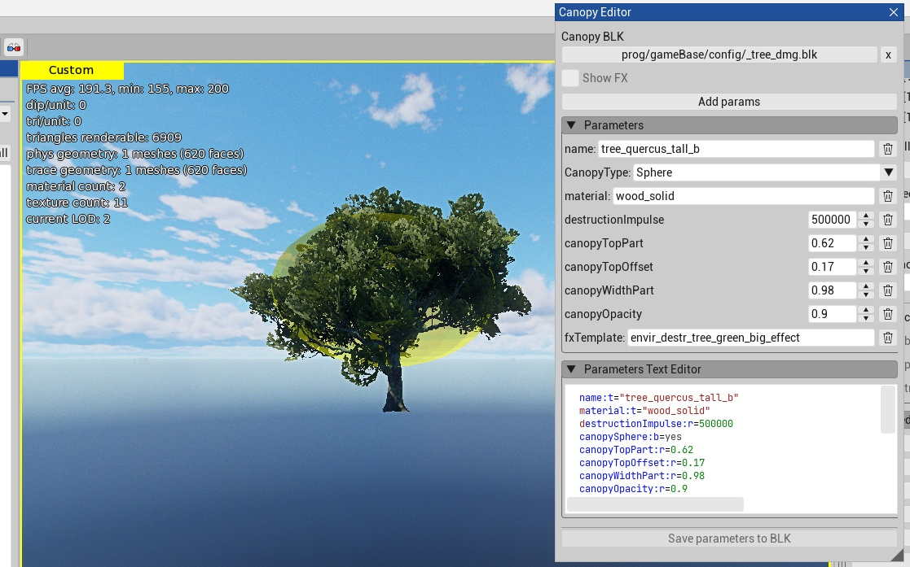
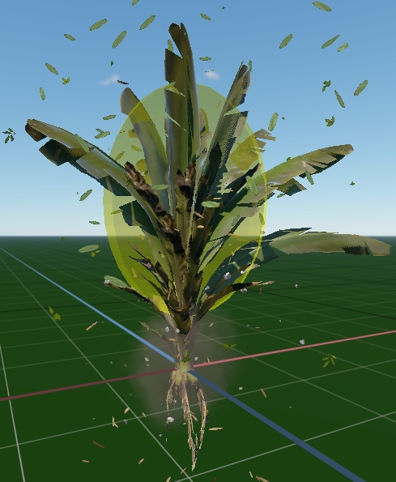
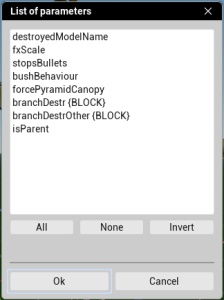
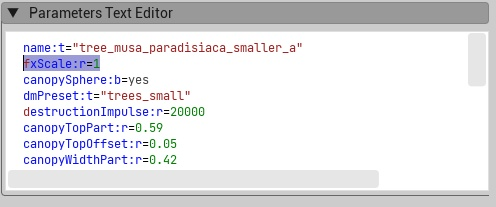
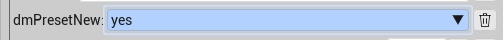

Canopy Editor
Overview
Canopy Editor is an Asset Viewer panel for
editing canopy destruction data in a .blk file. It edits the record for the
asset selected in the Asset Tree, shows the canopy volume in the viewport,
and can show the linked destruction effect.
The editor updates the selected record in its source .blk file. Saving
serializes the source document again, so do not rely on its original text
formatting.


Open Canopy Editor
In Asset Viewer, select View > Canopy Editor.
In Canopy BLK, select the
.blkfile that contains the canopy records.In the Asset Tree, select the asset to edit.
The editor finds a record by the selected asset name. For an asset whose name
ends with .lodN, the editor searches for the record by the base asset name.
For example, tree_oak.lod1 uses the tree_oak record. The editor supports
both record layouts:
Legacy records use a
dmgblock with aname:tparameter.Named records use the asset name as the block name. The block must contain canopy data or recognizable canopy FX or damage data.
If the record is in an included .blk file, the editor opens that source file and
saves the change there. If no record exists, the editor uses a suitable canopy
record as a template when one is available. Otherwise, it creates an empty
record when you save.
Do not mix legacy and named records in one source .blk file. If the file
contains a legacy record, the editor uses the legacy layout for the file.
For an asset with a tree or bush name token, the template search first
looks for a record with the same size token: small, medium, large, or
tall. It then looks for the same asset type without a size token. A bush
asset can use a tree template if no bush template exists.
Visual Editor
The Parameters group is the visual editor. It displays the parameters and
nested blocks in the current record as controls. Use the controls to change
values, the delete button to remove a parameter or block, and Add params
to copy a parameter or block from a record in the selected .blk file.
Use the visual editor when you need to inspect the record structure or change individual values. It shows type-aware controls for points, colors, matrices, and Boolean values. A valid change updates the canopy and effect previews in the viewport without the need to write BLK syntax. If a parameter has no editable visual control, use Parameters Text Editor.
The CanopyType list changes the canopy volume:
Box removes
canopyTriangleandcanopySphere.Triangle writes
canopyTriangle:b=yes.Sphere writes
canopySphere:b=yes.
Only one of the type parameters can be active. Changing to a non-triangle type
also removes forcePyramidCanopy.
The following are examples of parameters that affect the canopy volume preview:
canopyTopOffset:rsets the offset from the top of the asset bounds.canopyTopPart:rsets the height of the volume.canopyWidthPart:rsets the width of the volume.canopyOpacity:renables the preview when its value is greater than zero. A value less than or equal to zero hides it.


Canopy records can contain additional parameters and nested blocks. You can add a project-specific parameter in Parameters Text Editor. After you save and reload the record, the visual editor displays the parameter when its type is supported.
The viewport preview is a debug aid. It does not change the asset geometry.
Add Parameters
Click Add params to add a parameter or an available top-level block from a
recognized record in the selected .blk file. The dialog lists available
parameters and top-level blocks.
The editor copies a parameter only when its parent block already exists in the current record. It adds a selected block as an empty top-level block. After you select an item, edit or remove it in the visual editor.


Text Editor
The Parameters Text Editor is the text editor. It contains the current record as BLK text. The visual editor and the text editor describe the same record. A valid text change updates the controls and the viewport preview.
Use the text editor when you need to enter exact BLK data, edit several values at once, or copy and paste a parameter or block. It is useful when the source data is easier to edit as text than as individual controls.


The editor reports Invalid BLK syntax and disables saving until the text is valid. It parses text after a short pause in typing. Until the text is valid, the visual editor, Show FX, and Add params are unavailable. Use the visual editor if you do not need direct BLK text editing.
To create data for an asset that has no canopy record, copy the text from a similar asset, select the new asset, and paste the data in Parameters Text Editor. Then update the parameters for the new asset. This gives you a starting point with known parameters instead of an empty record.
If Add params does not list the parameter you need, add it as valid BLK text in Parameters Text Editor. The parameter appears in the visual editor after the text is valid. After you save and reload the record, it is also available in the Add params list.


Preview Destruction Effects
Select Show FX to show the effect referenced by fx:t or fxTemplate:t
in the selected record. If both parameters exist, fx:t takes priority. The
checkbox is available only when Asset Viewer can resolve the effect to an fx
or efx asset. The preview restarts about every three seconds.
Save Changes
Click Save parameters to BLK to update the current record in its source
.blk file. The button is available only when there are valid unsaved changes.
When you select another asset, select a different .blk file, or close Canopy
Editor with unsaved changes, Asset Viewer asks whether to save or discard them.
Click Cancel to continue editing.
Note
Canopy Editor writes to the source .blk file. Use the project version-control
workflow to review and submit the change.